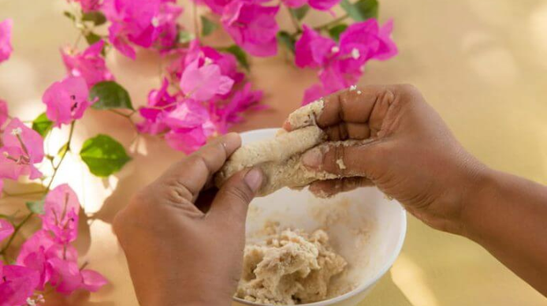
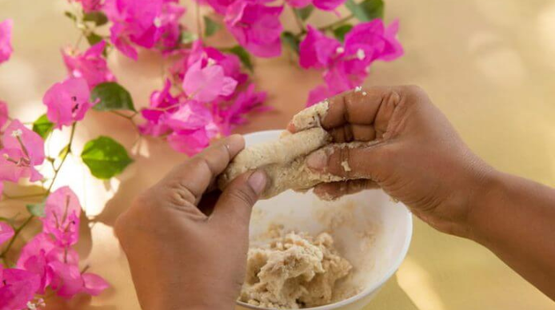

WHAT IS AYURVEDA
AYURVEDA
Ayurveda is more than a healing system it is a holistic way of life that embraces the physical, emotional, and spiritual dimensions of who we are. It interprets our biological and psychological nature and guides us toward habits that nurture balance, vitality, and long-term wellbeing.
For over 25 years, we’ve shared this authentic Ayurvedic wisdom through meaningful wellness journeys in Kerala. What began as a personal pursuit between my wife and me has evolved into trusted partnerships with leading centers across the region, including Somatheeram Ayurveda Health Resort (Trivandrum), Marari Beach Resort (Alleppey), and Ayurvedam Sreenilayam (Calicut).
Ayurveda medicine and life philosophy
Ayurvedic medicine is over 5000 years old. This makes it the oldest practised health system in the world. The translation of Ayurveda from Sanskrit means roughly “knowledge of life”. Two definitions help give an indication of how modern its view of health is. One of these is over 2000 years old and originates from one of the most important fundamental works in Ayurvedic medicine, the Sushruta Samhita: “A person is deemed to be healthy if their physiology is in equilibrium; with their digestive system and metabolism working well, their tissues and excretory systems functioning normally and their soul, spirit and senses in a state of enduring, inner contentment.” The other definition comes from the World Health Organisation (WHO): “Health is a state of complete physical, mental and social well-being and not merely the absence of disease or infirmity.”
Ayurvedic medicine’s holistic approach is also the reason why it has enjoyed such an exemplary position over the last two decades. People from industrialised countries, in particular, are increasingly recognising that this traditional Indian medical system not only cures illnesses but can prevent them too Ultimately: Ayurvedic therapies revitalise body and soul, they enhance well-being and restore strength that has been lost due to people’s lifestyles.
Why should I choose an Ayurveda treatment?
Because you will undergo a holistically designed treatment that will bring balance to your body and soul.
Because you will experience at first-hand how the therapies restore your confidence in your own vitality.
Because you will discover how the treatments enhance your joie de vivre and give you mental clarity.
Because you are worth indulging with something truly precious.
Ayurveda Packages
Do you feel tired and exhausted? Your back hurts with every move? Sweets, alcohol and fast food have been your companions for quite some time? If you have only nodded once at this listing, you should change something in your life. Do something good for yourself.
Book nowRejuvenation
Goal of the treatment: Recovery, VitalizationPackage
Rec. minimum duration: 9 days
Duration of treatment: 90-120 min daily
Group yoga for: Beginners, Advanced students
Body Purification
Goal of the treatment: Detox, balance of the Doshas
Rec. minimum duration: 14-21 days
Duration of treatment: 90-120 min daily
Meditation: Included
Stress Management
Goal of the treatment: Stress relief
Rec. minimum duration: 7-14 days
Duration of treatment: 160-180 min. daily
Group yoga for: Beginners, Advanced students
Slimming
Goal of the treatment: weight reduction
Rec. minimum duration: 21-28 days
Duration of treatment: 90-120 min. daily
Group yoga for: Beginners, Advanced students
Body Immunisation
Goal of the treatment: Boosting the immune system
Rec. minimum duration: 21-28 days
Duration of treatment: 90-120 min. daily
Group yoga for: Beginners, Advanced students
Beauty Care
Goal of the treatment: Improvement of the complexion
Rec. minimum duration: 14-21 days
Duration of treatment: 90-120 min. daily
Meditation: Included
The healing power of Ayurveda
Ayurveda is a holistic, traditional medical system. Its premise is that illness results from disharmony in the individual's natural, internal equilibrium. This is caused by lifestyle habits, which make us ill. Negative stress is just as much a contributor to this as an unhealthy diet or onerous work. Ayurveda can be helpful with lots of illnesses. Our doctors regularly treat:
 

Our doctors
At our health centre, we have 13 experienced doctors lead by the former director of Ayurveda for Kerala, Dr Raman, looking after all our guests' needs and desires. Some of our leading doctors will give you a little insight here into their motivation and their passion for Ayurveda

SENIOR MEDICAL OFFICER AND HEAD OF THE SOMATHEERAM MANUFACTURING UNIT
DR. JOBIN
Dr. Jobin Babu is a seasoned Ayurvedic practitioner with a strong foundation in holistic healing. His professional journey began in 2012 and reflects a deep commitment to the principles of Ayurveda. He currently serves as Senior Medical Officer at Somatheeram Ayurvedic Health Resort and Head of the Somatheeram Manufacturing Unit. His expertise spans pain management, sports injuries, arthritis, lifestyle disorders, mind-related conditions, and skin treatments.
Throughout his career, Dr. Jobin has found great fulfilment in witnessing the transformative impact of Ayurveda on people’s lives. Collaborating with experienced practitioners has strengthened his diagnostic skills and shaped a compassionate, patient-centred approach to care. His dedication extends beyond conventional practice through the integration of physiotherapy into Ayurvedic treatments and active participation in community health camps, reflecting his commitment to holistic well-being.
Driven by continuous learning, he stays updated with advancements in Ayurveda through medical journals, seminars, and specialised certifications. In his personal life, Dr. Jobin follows Ayurvedic practices diligently, aligning daily routines with seasonal changes. His interest in sports and outdoor activities further enhances his understanding of sports injuries and their Ayurvedic management. Through his balanced lifestyle and unwavering dedication, he embodies Ayurveda as not just a healing system, but a way of life.
SENIOR MEDICAL OFFICER
DR. MOLLYAMMA JOSEPH
Doctor Molly is a humble, petite lady who has experienced a lot in her life. It is immediately obvious that she puts her heart and soul into her professional work.
As a child, she already knew that she wanted to become a doctor and help other people. But it was her father who made the decision that his daughter would study Ayurvedic medicine. Now this has become her vocation. Doctor Molly is instinctively committed to protecting the well-being of the universe, the earth and all its living creatures. This makes her a valuable ambassador for the millennia-old discipline of Ayurveda, not just in her immediate environment but also further afield.
After her studies, she consolidated and built on her knowledge in various different locations. After several placements in rural areas, she opened up her first clinic. During her many years as a senior physician at a public hospital, she was able to help lots of people.
She subsequently decided to commit fully to a single field of expertise that is barely known in this form in the West.
Doctor Molly is a very special asset for our guests and for our team of doctors thanks to her many years of professional experience but also thanks to her personal qualities. And if you want to find out more about traditional Ayurveda, its development and possibilities, just speak to him during your next visit to Somatheeram
Treatments
Every Ayurvedic regimen involves a range of different treatments. For your therapy, our doctors will put together a number of treatments specially tailored to meet your needs, which will specifically support your body during the cleansing and renewal process. The individual treatments are primarily distinguished by the relevant medicinal herbs and oils they use. They will be specifically selected for your constitution and should restore your natural dosha equilibrium. We have compiled a list of the most important Ayurvedic treatments here.